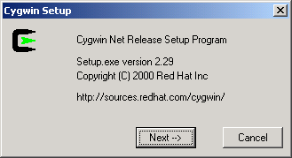
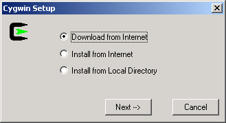
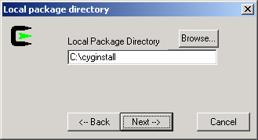
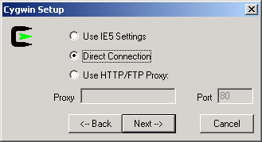
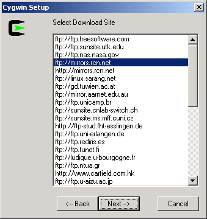
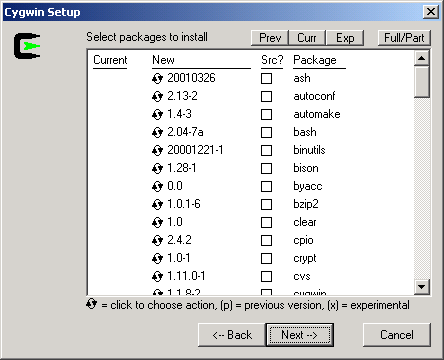
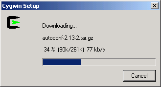
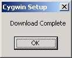

Cygwin tools are, in the words of the Cygwin development homepage, http://cygwin.com/, "ports of the popular GNU development tools and utilities for Windows 95, 98, and NT. They function by using the Cygwin library which provides a UNIX-like API on top of the Win32 API." Cygwin allows the compilation of the XFree86 source on Win32; several patches were made to the XFree86 source to make XFree86 actually compile and run under Cygwin; those patches have been merged into the XFree86 4.0 source tree.
Cygwin has a nice setup program that downloads and installs the necessary Cygwin packages for you.
Tip: Be sure to use setup.exe version 2.13 or greater if you intend to save the downloaded packages to a Samba share; some versions of Samba have a problem with prior versions of setup.exe.
Open the Cygwin, http://cygwin.com/ page in your web browser
Click the "Install Cygwin Now" link in the upper-right hand corner of the page; or, click the "Install" link next to "Latest net release:", which should be near the top of the page in the main content area. This link downloads setup.exe from the primary Cygwin server; save setup.exe to the directory that you would like to store the downloaded packages in (e.g. c:\cyginstall); do not save setup.exe to c:\cygwin, as that is the default directory for the extraction and installation of the downloaded packages. At the time of writing, a full download of all Cygwin packages takes 25 MiB of disk space.
Run setup.exe, you will see the welcome screen:

Click to proceed to the next screen
Choose, Download from Internet, this will save the package files to your download directory so that you can install Cygwin on any number of machines:

Click to proceed to the next screen
Local Package Directory should default to the directory that you ran setup.exe from:

Click to proceed to the next screen
Choose your proxy setup, or, just choose Direct Connection to limit the scope of download problems:

Click to proceed to the next screen
Select your nearest mirror for downloading:

Click to proceed to the next screen; setup will download a list of available packages as it moves to the next screen
The default selection of packages should be okay for most users. However, you may wish to ensure that the inetutils and ssh packages are selected if you wish to use telnet and ssh to connect to remote machines.

Click to begin the download process, you may want to try another mirror if you see a "Connecting" message on this screen for a long period of time:

You should receive a message that the download has completed; you now have all of the packages necessary for installation of Cygwin:
